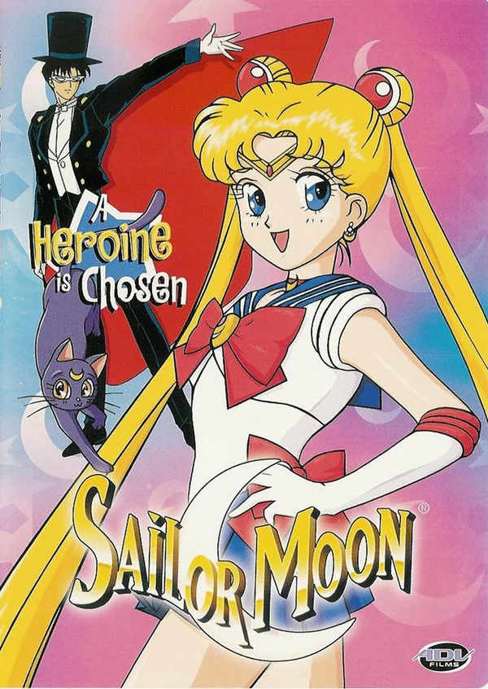

Сюжет

В далёком прошлом на Луне существовало королевство — Серебряное Тысячелетие. Оно мирно сосуществовало с Землёй. Принц Земли Эндимион и принцесса Луны Серенити полюбили друг друга, но люди, охваченные тёмной силой, напали на Серебряное Тысячелетие. Воспользовавшись силой Святого серебряного кристалла, королева Серенити сумела остановить захватчиков, но её королевство было уничтожено, а сама она умерла. Всё, что она смогла сделать — это устроить так, чтобы её дочь и её воины-хранители родились вновь в будущем в мирное время и смогли прожить там счастливую и спокойную жизнь.
Главная героиня «Сейлор Мун» — Усаги Цукино. Она была обычной школьницей, пока не встретила говорящую кошку Луну. Луна помогла Усаги пробудить свои силы и научила девушку превращаться в Сейлор Мун, чтобы сражаться со злом, пытающимся захватить Землю. В сражениях к ней присоединились и её подруги — другие воины в матросках.
С развитием сюжета сейлор-воины узнают больше о своих врагах и силе Хаоса, направляющей их. В то же время раскрывается правда об их прошлых жизнях и о будущем Солнечной системы.
Сюжет делится на пять основных сюжетных арок, каждая из которых была представлена и в манге, и в аниме. Их названия — арка «Тёмное королевство», арка «Чёрная Луна» (Sailor Moon R), арка «Бесконечность» (Sailor Moon S), арка «Мечта» (Sailor Moon Supers) и арка «Звёзды» (Sailor Stars). В аниме демонстрируется дополнительно Макайдзю (небольшая арка в начале второго сезона), а первые серии пятого Sailor Stars завершают сюжет предыдущих серий.